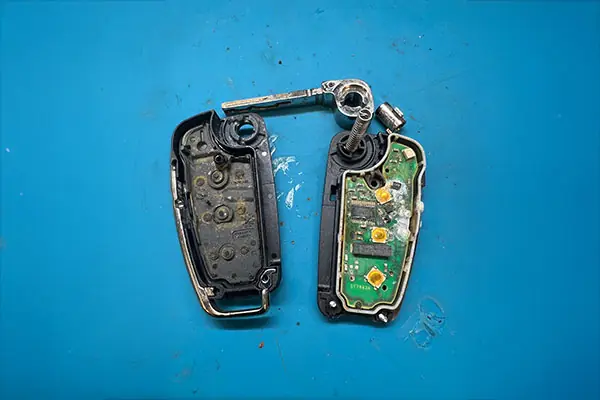

Autoschlüssel reparieren statt neu anfertigen
Ein defekter Autoschlüssel muss nicht automatisch ein neuer sein. Wir reparieren Fahrzeugschlüssel, wenn sich das lohnt – und sagen Ihnen offen, wenn es sich nicht mehr lohnt. Bevor Sie also einen neuen Schlüssel bestellen, lohnt der Blick ins Gehäuse.
Leere Batterie
Sehr oft ist nur die Knopfzelle leer. Typisches Anzeichen: Der Funk reagiert erst aus kurzer Entfernung, während sich das Auto mit dem Bart noch normal aufschließen lässt. Der Batteriewechsel ist eine Sache von Minuten.
Gehäuse und Klappschlüssel
Der zweite Klassiker: Klappschlüssel brechen am Scharnier, Tasten verlieren ihren Druckpunkt, Gehäuse scheuern durch. In vielen Fällen setzen wir die vorhandene Elektronik einfach in ein neues Gehäuse um – das ist deutlich günstiger als ein kompletter Neuschlüssel samt Anlernen. Sitzt der Schlüsselbart lose oder ist er verbogen, lässt sich auch das oft beheben, ohne die Elektronik anzufassen.
Elektronik und Platine
Reagiert der Schlüssel gar nicht mehr, sehen wir uns die Platine an: lose Kontakte, ausgeleierte Taster und abgerissene Batteriefedern lassen sich häufig instand setzen. Ist die Platine wirklich defekt, sagen wir Ihnen das offen und fertigen einen neuen Schlüssel an – dann wissen Sie vorher, woran Sie sind.
Was in Ihrem Fall möglich ist, klären wir vorab: Marke, Modell, Baujahr und eine kurze Beschreibung genügen – am Telefon oder per WhatsApp.